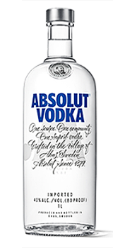
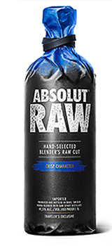
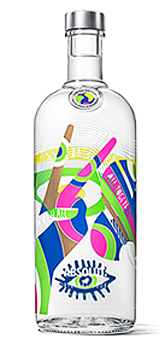
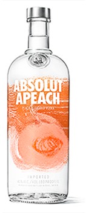
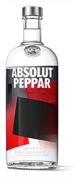
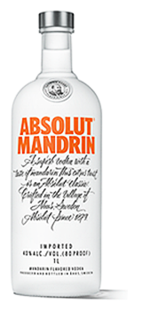

Absolut Vodka is one of the most famous vodkas in the world. Launched in the US in 1979,
it completely redefined the premium vodka landscape, becoming synonymous with art, culture and nightlife.
By starting a revolution in cocktail creation and launching a range of flavors never before seen
on the market,Absolut became an icon in its own right.
Here you can discover some of Absolut’s most popular flavors and products,
and see for yourself why it is still regarded today as the true taste of vodka around the globe.






Being so refined, why drink Absolut Vodka any other way than it is? In fact, there’s a good
reason why: the more refined the vodka is, the better it blends with other aromas meaning
Absolut Vodka enhances the taste of your favorite cocktail.